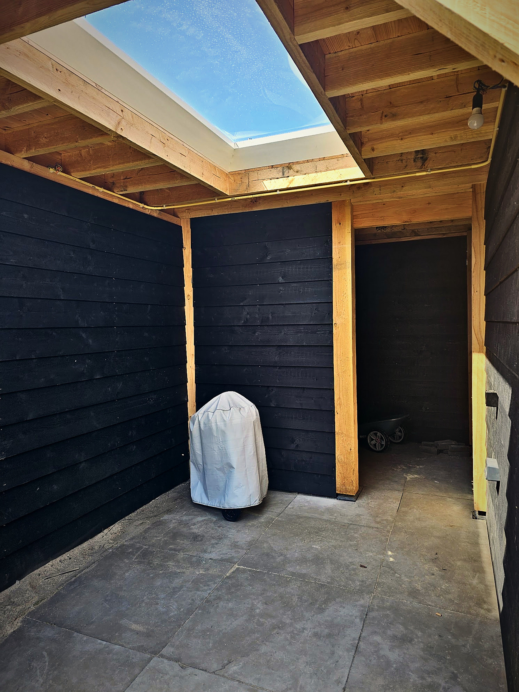
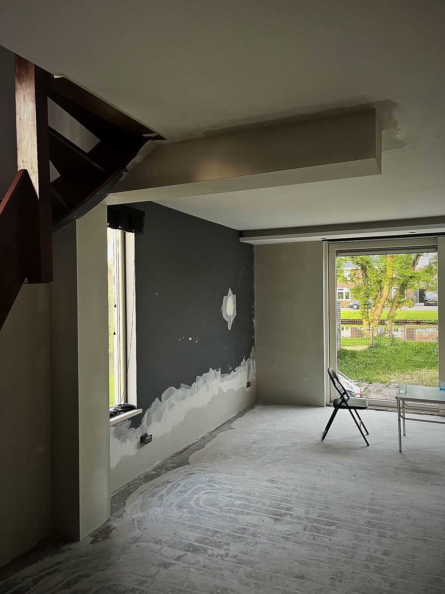
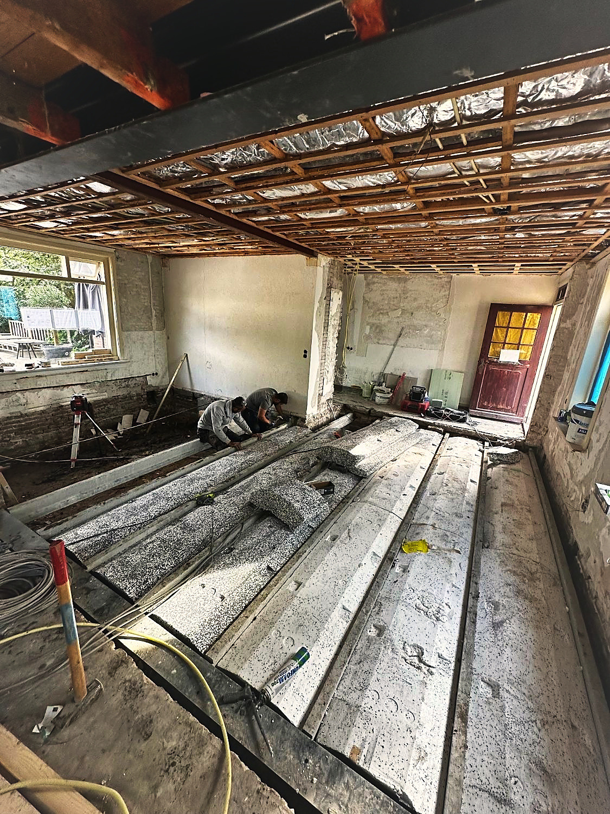

01↗
Betonvloeren
Gestort, geëgaliseerd en machinaal gevlinderd
De map schuift open en onthult het werk. Ernaast: alles wat we binnen die dienst oppakken.
Gestort, geëgaliseerd en machinaal gevlinderd
Binnen en buiten, van een garage tot een compleet terras — inclusief isolatie, wapening en vloerverwarming.

Van ongebruikte zolder naar volwaardige kamer
Van draagconstructie tot het laatste likje verf — u kunt er zo intrekken.

Maatwerk in hout, afgewerkt tot in de puntjes
In Douglas- of eikenhout, afgedekt met EPDM en nette boeidelen — passend bij uw woning.

Erkend montagepartner — altijd waterdicht
Als erkend Velux-montagepartner met de officiële sets — netjes ingepast en afgewerkt.

Van ruwbouw tot de laatste lijst
Alles wat van een ruimte een afgewerkt geheel maakt — tot en met het stuc- en schilderwerk.

Het fundament onder al het werk
Stevig beginnen — van strokenfundering tot betonpoeren en vorstranden.